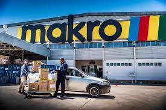
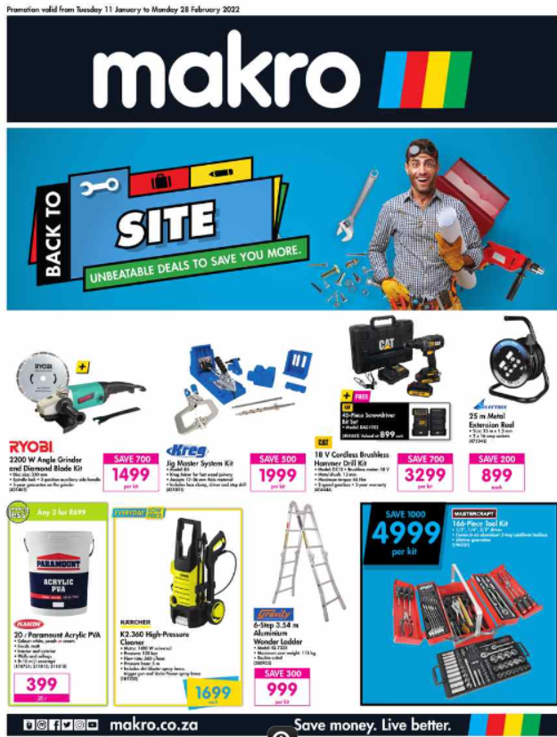
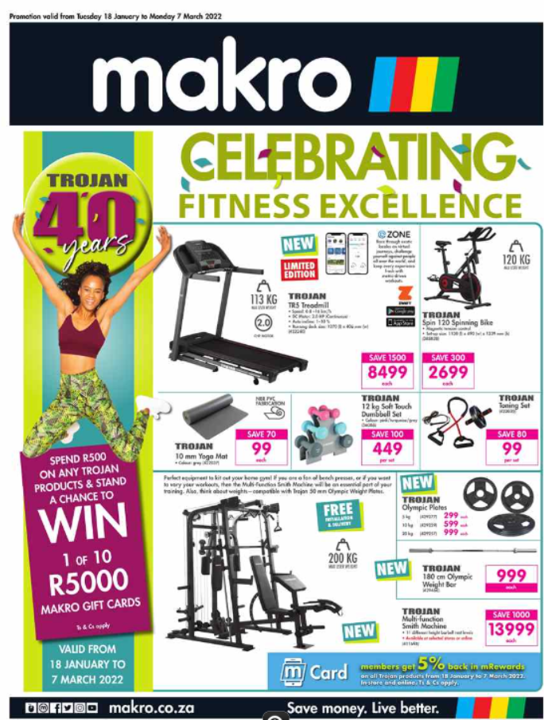

MAKRO
Massmart Holdings Limited (JSE: MSM) is a South African firm that owns local brands such as Game, Makro, Builder's Warehouse and CBW.
It is the second-largest distributor of consumer goods in Africa, the largest retailer of general merchandise, liquor and home improvement equipment and wholesaler of basic foods.
As of 31 January 2022, Massmart operated 414 stores in South Africa and 12 other Sub-Saharan countries.Its head offices are in the Massmart House in Sandton, Johannesburg.
LOCATION
SHOP:L67/71 Located oppisite Checkers